Simple and Easy Recipes
Posts on 'spicy'
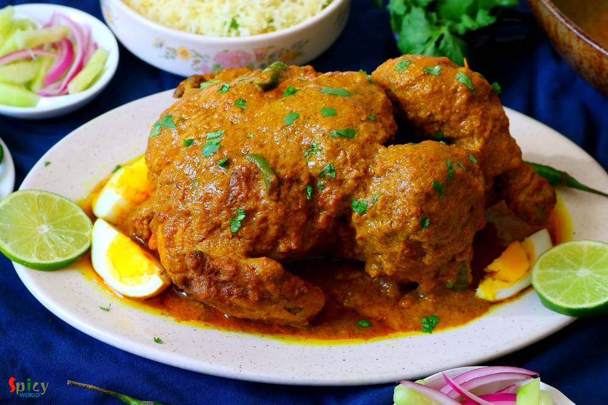
Nonveg Recipe
Jan 2, 2020
Murgh Musallam is a delicacy from Mughlai cuisine. The recipe requires for whole chicken but you can definitely make it with medium size pieces also. In Murgh Musallam recipe, the whole chicken will be marinated for a good long time, then it will get stuffed with eggs and after that the chicken will get cooked in a flavorful onion and nut based gravy. You can make this dish on special occasions an ...


Nonveg Recipe
Sep 5, 2019
Sorshe bata (mustard paste) diye Mach (fish) is a staple for Bengali. I truly love every form of bengali fish curry from Jhol to Kaliya with some steamed rice. My mom makes this Sorshe bata diye Mach very often but I have never tried it with onion, ginger and garlic. One day I came across this Sorshe Salmon recipe of Somedutta's (my friday food swings) and it caught my attention. I gave it a try, ...

Veg Recipe
Aug 15, 2019
Dopyaza means double the amount of onion. Paneer Dopyaza is a North Indian Paneer gravy preparation which has a thick, creamy sauce along with soft Paneer cubes and slight crunch of onion. In this recipe onions will be added twice in two different forms. It goes best with naan, roti or jeera rice. Do give it a try and let me know how it turned out for you.

Nonveg Recipe
Jul 30, 2019
Fish paturi aka Macher Paturi is a traditional Bengali recipe in which any white fish fillet (bhetki or swai or basa is preferable) or shrimp or Hilsa is cooked by wrapping in banana leaf. The word 'Paturi' comes from the Bengali word Pata or Leaf. Almost any Bengali function or good old Bengali restaurant is incomplete without Paturi. You can either steam them or fry them. But I like the fried ve ...

Nonveg Recipe
Jul 17, 2019
As you know Dhaba means road side food joints. Their ambiance and kitchen are not very sophisticated rather more simple and rustic. Dhaba style Butter chicken has spicy, rich, colorful gravy with generous amount of butter and their chicken pieces has very smokey flavor. Overall I love this version of Butter Chicken with some Garlic naan or Jeera rice. Do give this recipe a try and let me know how ...

Nonveg Recipe
Jun 19, 2019
Most of the Punjabi curries call for three important ingredients - freshly ground Garam Masala powder, Kasuri methi (dry fenugreek leaves) and Ghee (clarified butter). These ingredients make their curries very flavorful and tasty. Rest of the process is simple, marinated mutton will be cooked in onion tomato gravy. This punjabi mutton curry goes best with plain chapati (Indian flatbread) or rice. ...

Veg Recipe
Jun 4, 2019
Paneer Masala has a spicy onion and tomato based gravy with some flavorful spices like garam masala powder, dry fenugreek leaves etc. In any dhaba style (road side food joints) curry you will get actual flavors of the spices as they follow one simple rule - slow cooking. Fry the onion until golden, cook ginger garlic paste until raw smell gone, after adding dry spices cook on low flame and obvious ...
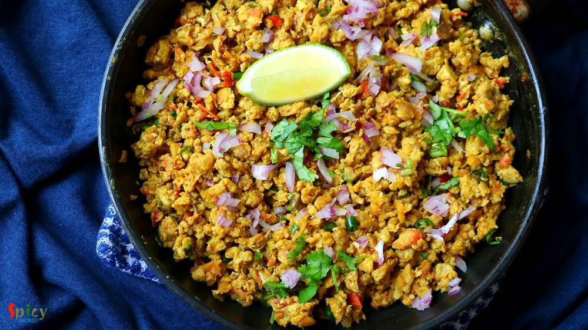
Nonveg Recipe
Apr 26, 2019
Anything scrambled means Bhurji in India. Be it egg, paneer or nutrela, they all taste delicious. In this Egg Bhurji recipe first we will make a masala with onion and tomato, then eggs will be scrambled with that. Anda bhurji has no gravy but it is soft and juicy enough to pair with phulkas (roti) or pav (bread). You can make very good sandwich with them also. Try this recipe in your kitchen and l ...

Nonveg Recipe
Apr 18, 2019
Either its Bhuna Chicken or Chilli Chicken... now what is Bhuna Chilli Chicken? When left over bhuna (slow cooked) chicken curry got makeover next day by tossing in chilli chicken gravy then this crazy recipe happened in my kitchen. We all were pretty much overwhelmed by the taste of it. I have never thought it will become that much flavorful! It was completely a different dish, you have to try th ...

Veg Recipe
Apr 9, 2019
Aam Kasundi is a fire free recipe. You don't need to cook anything here. To make Bengali Aam Kasundi all you have to do is to blend everything in a blender and then for 2-3 days keep it under sunlight, after that in fridge. You can enjoy this preservative free Aam Kasundi all through the year. The aroma and taste of homemade Kasundi is phenomenal like any other Chutneys. I kept the recipe very sim ...

Veg Recipe
Mar 2, 2019
Doi Potol is a traditional Bengali vegetarian delicacy. Potol is pointed gourd or parwal. In this recipe pointed gourd will be cooked in a spicy and tangy yogurt based sauce. I didn't use onion and garlic in this, but you can if you wish. Doi Potol goes best with plain steamed rice. I kept the recipe very simple and easy. Do try this in your kitchen and let me know how it turned out for you.

Nonveg Recipe
Sep 24, 2015
Yesterday morning during surfing net I saw an eyecatching picture of Chicken Dak Bunglow curry. It made me doing immediate preparation for dinner.Trust me, after dinner there was literally nothing in our plate except bones:-) It became so damn tasty ! I once ate the mutton version of this curry. That was also finger licking delicious, will upload that soon. Do give this recipe a try and I am sure ...
")
Nonveg Recipe
Feb 27, 2019
If you are a fish lover, then 'fish fingers' should be on the top of your list. These crispy, spicy fingers can steal your heart in one bite. In Kolkata, every street food center, college canteens, restaurants sell these lip smacking Fish Fingers with chili sauce or Kasundi. You can use any kind of white fish fillet in this recipe. Oh boy, the taste is unbeatable and unforgettable !! There are no ...

Nonveg Recipe
Feb 26, 2019
Dalna means a curry which contains potato with other vegetables or protein. But potato is a must for Dalna. Some also call it Torkari. Summer is coming and so is sweaty tiredness with it. If you don't want to spend long time in the kitchen, no worries! I have a solution. Dimer Dalna or Egg and Potato Curry is the most simple and easy recipe which can easily feed a crowd. Anyone can enjoy a good, t ...

Nonveg Recipe
Feb 14, 2019
Mutton korma is an old school and popular non veg main course item from Old Delhi. Any korma recipe has onion and yogurt based sauce, some even add nut paste also. Last weekend I had a party in my house. Among all the foods, the main attraction was Mutton Korma. Korma is very rich itself. Always serve this with light rice item or naan. Do give it a try and let me know how it turned out for you.

Veg Recipe
Feb 10, 2019
Niramish means without onion and garlic. Usually when we offer a meal to god / goddess with our respect and devotion, we call it 'Bhog' / 'prasad' . In any prasad, this Aloor Dom is a must with khichdi and chutney. This recipe is without onion and garlic, that's why I mentioned 'niramish'. During monsoon you can also enjoy this with khichuri, beguni and chutney or in weekend breakfast make some lu ...
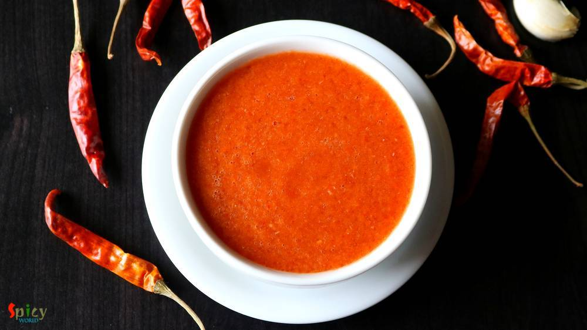
Veg Recipe
Feb 4, 2019
Whats the fun in having Momos without chutney?sounds so boring. This red colored hot and spicy chutney has garlicky and roasted tomato flavor and tastes awesome not only with momos but you can pair it with samosas, kachoris, chicken pakoras etc. In few shops you will find 3 types of momo's chutney - red, yellow and white. But this red hot chutney is very common and popular all across India. Do try ...

Nonveg Recipe
Jan 31, 2019
Mughlai Keema Paratha is a very famous street food which has another name Keema Baida Roti. In Kolkata we call them 'moglai porota'. I made these parathas exactly like street style with minced meat, but you can skip that Keema part and keep the rest of the recipe same. The process is a bit lengthy but it is worth trying. I made dry potato curry along with mughlai paratha because these two goes ver ...

Nonveg Recipe
Jan 28, 2019
Chicken Hot and Sour Soup is one of the popular soup variety from Chinese cuisine. In this silky, spicy, sour broth you can add almost everything like chicken, egg, tofu and many kinds of vegetable. Hot and sour soup tastes best (especially) during winter or monsoon and it can also uplift your taste buds. Try this easy recipe in your kitchen and let me know how it turned out for you.

Nonveg Recipe
Jan 21, 2019
Kids are always excited about their lunchbox. My mom used to make this savory pancake in my lunchbox and I loved them. You can also stuff the savory pancakes with any type of dry curry. Yesterday I made them in breakfast and they came out delicious. I mentioned 'savory' because usually we eat 'pancake' with sweet maple syrup but these can be serve with ketchup or chili sauce. Try this at your home ...

Nonveg Recipe
Jan 17, 2019
Sunday mutton curry is a super easy, fuss free goat meat recipe which goes best with plain rice. This mutton curry is my family favorite and almost every sunday they demand to have it on lunch. And in the evening, my husband silently ask me is there any left over from lunch so that we can have it with roti at dinner? Yes, this sunday mutton curry is really close to our heart and we love it to the ...

Veg Recipe
Jan 14, 2019
Lehsuni Daal Tadka is a spicy toor lentil preparation which has a very flavorful garlicky tempering. This daal tadka goes best with plain chapati or rice. The recipe is very simple and easy. I usually make this lehsuni daal during winter as it tastes so good and seems comfort in a bowl in those chilly afternoons or nights. Try this in your kitchen and let me know how it turned out for you.
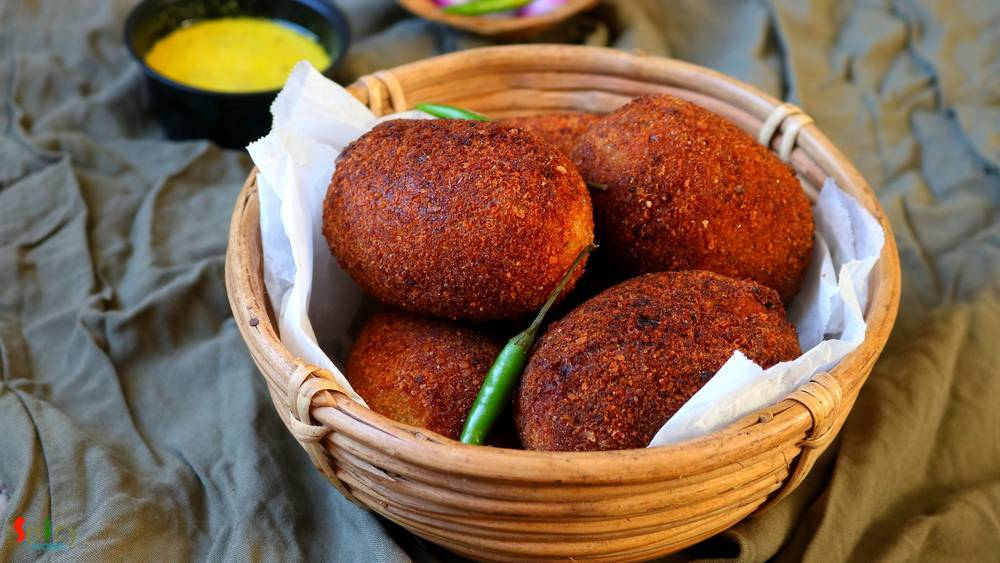
Nonveg Recipe
Jan 1, 2019
In Bengal, one of the famous street food is 'dimer devil'. Dim means Egg in Bengal. Nowadays, 'egg chop' is also served in many party, get to gather and occasions. To make this you have to wrap a boiled egg with spicy potato filling, roll them in bread crumbs and then deep fry them. In college canteen or any ceremony, sometimes the cook mix some minced mutton (keema) with the spicy potato, the tas ...

Nonveg Recipe
Mar 7, 2019
A super spicy and fiery indo-chinese starter is 'Chicken 65'. In southern part of India, few restaurants first started selling this Chicken 65 as a quick snack and now, people from all around the world knows about Chicken 65. In USA, we get delicious Chicken 65 from Indian restaurants, it is one of our favorite appetizer and that is why I made my mind to make this dish in my kitchen. You can make ...

Nonveg Recipe
Sep 13, 2019
One of the most famous dish from Mughlai cuisine is 'Chicken Chaap' and the taste is unbeatable. You will find the actual taste and flavor in few popular restaurants in Kolkata. After researching for a long time about the authentic recipe of Chicken chaap, here is the way how I made it. This recipe will give you the exact flavor of restaurant style Chaap. This dish should not be eaten as regular m ...

Nonveg Recipe
Dec 19, 2018
Mutton Handi is a delicious goat meat curry which has a scrumptious gravy and goes best with plain chapati, butter naan or pulao. Handi means clay pot. Usually mutton handi is cooked in clay pots, that's where the name came from. But I didn't have one, so cooked in my regular vessel. The taste was out of the world, soft pieces of slow cooked mutton literally stole my heart. If you are a mutton lov ...
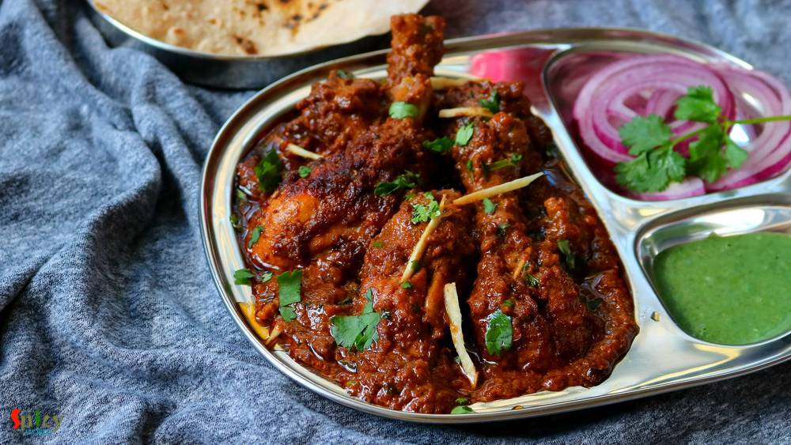
Nonveg Recipe
Dec 6, 2018
Chicken Changezi has a rich, chatpata (spicy and tangy) and very delicious gravy which goes best with plain flatbread or naan. Changezi Chicken is a popular dish in Delhi. Almost every non veg restaurants and dhabas sell this dish. In this recipe lightly fried chicken will be cooked in a brown onion and nut based gravy and to make it chatpata, we will add chaat masala, lemon juice, green chilies a ...
")
Nonveg Recipe
Dec 14, 2018
I am a very fast food loving person. During college life there was hardly any day I skipped fast food. Be it simple 'phuchka' (panipuri) or heaviest roll, I was always in ! Surprisingly after my marriage I have taken a lot of control over my food habit, I have become more conscious now. But that doesn't mean I can't eat fast food once in a week .. hell I can ! ?? When I made these yummy 'egg chi ...

Nonveg Recipe
Nov 29, 2018
Tandoori Prawn Pulao is a delicious, spicy seafood rice pilaf dish in which Prawns will be marinated with yogurt, tandoori spices and other ingredients then will be tossed with long grain Basmati rice ... so so good! You can have this Prawn Pulao as it is or any kind of gravy on the side will work just fine. The recipe is simple and take very less time to cook. Try this in your kitchen and let me ...

Nonveg Recipe
Nov 22, 2018
Hariyali Chicken Kabab is a very delicious variety of kabab in which boneless chicken will be marinated in yogurt, ginger, garlic, mint-coriander paste and lot of fresh spices along with few other ingredients. You can definitely use chicken legs instead of boneless. I will recommend you to use chicken thighs instead of breast pieces, as thighs will come out much more juicy. Hariyali means green co ...
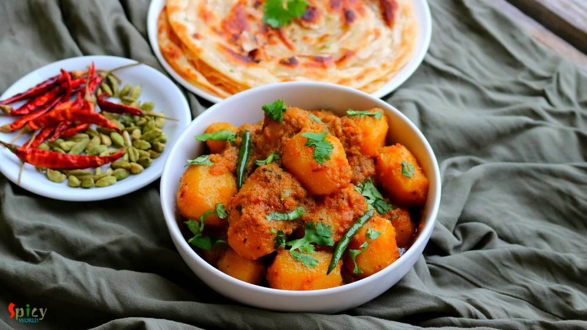
Veg Recipe
Nov 19, 2018
Aloor Dom is a very good old Bengali recipe which can never go wrong with anything. You can serve this Bengali style dry Potato curry with Luchi / Porota / Kochuri / Pulao / Fried rice and what not. It tastes heavenly. I made Lachha Parathas to go with it. The recipe of Aloor dom is very easy in which potatoes will be cooked in onion tomato based gravy along with a special ground masala and yes, t ...

Nonveg Recipe
Nov 13, 2018
In India many dhabas and restaurants sell Keema Masala which is minced mutton curry. Keema means mince. This is a delicious non veg gravy which goes best with plain chapati or naan. In Keema Masala, minced mutton will be cooked in a onion tomato based sauce along with some flavorful spices and lots of fresh green chilies and coriander leaves. Try this recipe in your kitchen and enjoy a wonderful d ...

Veg Recipe
Nov 12, 2018
Doi Fuchka or Dahi Puri Chaat is one delicious and popular variety from Chaat Gharana. You can get several types of chaat in India from street vendors. They all are very very tasty. In Kolkata, one of the famous chaat is 'doi fuchka'. The hollow chips are filled with spicy potato filling, thick sweet and sour yogurt mixture, sweet tamarind chutney along with lots of fresh coriander leaves and few ...

Nonveg Recipe
Nov 7, 2018
One of my favorite indo-chinese dish is 'Chili Fish' - which is very similar to Chili Chicken. In this recipe, deep fried fish nuggets will be cooked in a hot and spicy sauce with onions and peppers... so, so delicious ! You can get them in many Chinese restaurants in Kolkata. It tastes heavenly with fried rice or noodles and it is very easy to make. Try this recipe in your kitchen and enjoy with ...
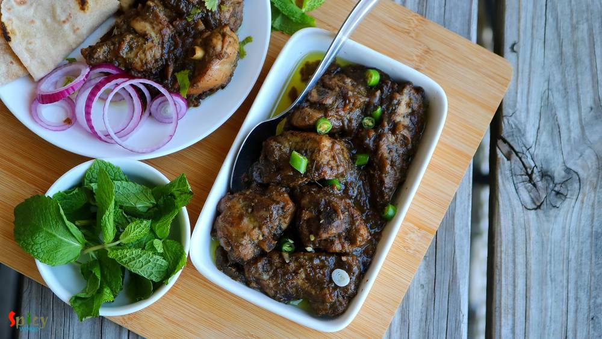
Nonveg Recipe
Oct 29, 2018
Pudina Chicken has a delicious yogurt and mint based gravy which goes best with plain roti or Indian flatbread. Mint leaves / Pudina patta has it's very own unique taste and flavor, which is why you can only use them in those dishes where it fits properly. Not every chicken curry tastes good with mint but this one is my family favorite. Pudina Chicken is very simple recipe with loads of fresh flav ...
")
Nonveg Recipe
Aug 23, 2018
I am a really big fan of indo-chinese food, whereas 'he' prefers mughlai or authentic bengali food more. Before marriage, I used to find excuses to go to any restaurant and eat 'chilli chicken' with rumali roti. I know what are you guys thinking. But don't know why I love this combo so much. In every street of Kolkata you can find various indo-chinese restaurants. I mentioned Kolkata style because ...

Nonveg Recipe
Oct 21, 2018
Rajasthan is a state of India which is situated at the western part. In childhood I went there with my family on vacation, though I remember nothing much except our album photos. Rajasthan is the land of kings and 'laal maas', which is hot and spicy red colored mutton curry, is their well known dish. The dish is everything about color and flavors. They cook the mutton in a yogurt and onion based s ...

Veg Recipe
Oct 16, 2018
In Bengal, Durgapujo is incomplete without Ghugni. During pandal hopping one of the best selling street food after phuchka is Ghugni. Not only as a street food, on the auspicious day of Bijoya Doshomi (last day of durga pujo) Ghugni along with Nimki and Naru is served in every household of West Bengal. Ghugni is a yellow peas curry with few chunks of potato although many people add chopped fried c ...

Nonveg Recipe
Oct 4, 2018
I made this Kosha Chingri Macher Kalia last weekend with some steamed rice and curry leaves tempered musur daal. He finished the lunch (read there wasn't any meat curry, not even leftover) with a big smile, that too on weekend. This spicy prawn curry worked like a magic. So, I had to share with you all the recipe of this Bengali delicacy - kosha chingrir kalia. Though the word 'kosha' suggests slo ...

Nonveg Recipe
Oct 2, 2018
Mutton Kosha is a Bengali delicacy which can be served with plain rice / basonti pulao / luchi. Mutton kosha requires patience, kosha means slow cooking in oil and spices. Off course to hurry up the process you can use pressure cooker, but slow cooking is recommended and this mutton curry like any other curry tastes better on next day. We have one more variance of the Mutton Curry called Kosha Man ...

Nonveg Recipe
Sep 21, 2018
Kolkata style Chicken Dum Biriyani is one of the tastiest variety of biriyani recipe, which has awesome flavors and juicy chicken pieces. You can have it as it is or with Chicken Chaap / Korma / Kosha. I also have other Biriyani recipes in my blog. Cooking Biriyani is time consuming, also the more you practice the more you will get better at this. The process is lengthy but with few tricks and tip ...

Veg Recipe
Sep 4, 2018
Upma is a very healthy and tasty Indian breakfast, in which the main ingredient is semolina. It is very popular in southern part of Indian. But nowadays Upma is served in many other households also. Almost twice in a week my mom used to give me 'jhal sooji'(Bengali term) in my lunchbox. It's not just me, my friends also enjoyed it. The fresh flavors of curry leaves and green chilies, proteins from ...

Nonveg Recipe
Dec 4, 2018
'Torka-ruti' has always been a great favorite of mine. It's great with any type of bread like naan, tandoori roti, lachha paratha ... but with plain chapati / roti, the pair becomes heavenly. I have already posted some recipes on 'dhaba style' but the most popular and well known recipe is 'dim torka' or 'whole moong daal with scrambled egg'. When they serve this dish with raw onion chunks, green c ...

Nonveg Recipe
Sep 7, 2018
This is one of my favorite midweek curry so far. When you don't want to spend too much time in kitchen but still want to have something yummy, then this spicy egg (also called anda) curry is life saver. As you all know 'kosha' means slow cooking with oil and spices. I know what you are thinking - 'slow cooking' on weekdays? When the main ingredient is egg, then yes you can make this Egg Kosha in a ...

Nonveg Recipe
Aug 25, 2016
We all love to eat food from Dhaba (road side food joint) while traveling. Nowadays you can find many fake dhabas and taste of their food is also fake, nowhere close to the authentic ones. Luckily few old and original dhabas in India still sells the best meals. After tasting those foods, you will probably think that their cooks must have some kind of magical hands. I once tasted their 'mutton curr ...

Veg Recipe
Jun 4, 2016
'Khichuri' is a seasonal one-pot-meal. We generally enjoy it in monsoon or winter. The easiest dish of rice category is 'khichdi'. From bachelor to elder, everybody knows how to make it. But this is a tastiest variation of khichdi. 'Achar' means pickle, I used mango pickle here. The process is very simple, no need to fry or cook anything separately, everything will be cooked in one pot and one tim ...

Veg Recipe
Aug 20, 2018
I fell in love with 'daal fry' when I first tasted it at a restaurant. A big bowl of daal fry with fresh aroma of coriander leaves and few slices of naan .. very simple equation to make me happy. Yes, you read it right .. no need of non veg stuff with this kind of blissful meal. In India, I never had daal fry at home, always in restaurant. But time flies so quickly. Now I can make it by myself. I ...

Nonveg Recipe
Jul 5, 2018
In Bengal, one of the common non-veg curry is 'chicken kosha'. I think everybody is familiar with this name. Kosha / Bhuna is a process where you have to cook the meat with spices on medium - low flame in its own juices, if it gets dry then only add water as less as possible. It requires time but with chicken you can make it within an hour. One can make the same curry with mutton, potato, egg etc. ...
")
Nonveg Recipe
May 31, 2019
Fish fry or Bhetki fry is a very famous street food of West Bengal. Bhetki (or any white fish) will be first marinated in a green paste then they will get a coating of breadcrumbs and before serving will be fried until golden. There is a fast food center in Chandannagar, named 'robi fast food center', to me he is the best fish fry maker. As my school was in Chandannagar, so I know more shops of th ...

Nonveg Recipe
Jun 25, 2018
This green chili mutton has become very popular nowadays in Bengali restaurants in Kolkata. They make this dish with chicken also. After reading the ingredients you will wonder why spinach leaves? 6 blanched spinach leaves wont spoil the taste, rather it will give the curry a nice green color. Heat will only come from green chilies that's why there is no use of dry red chilies in this recipe. It's ...
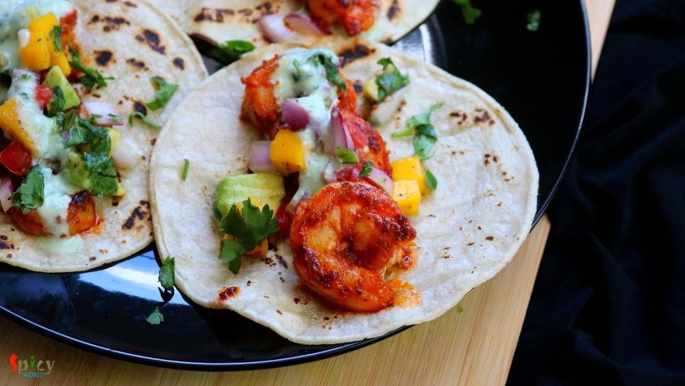
Nonveg Recipe
Jun 19, 2018
The name itself sounds delicious ... isn't it ?? Tacos and Salsa are the part of Mexican cuisine. Nowadays many restaurants serve fusion food. This is an Indo - Mexican recipe. You can make it with chicken also. There are so many Taco recipes on the Internet. But my family fell for these fusion version where Tandoori Shrimps were wrapped in charred tortillas along with some spicy, tangy mango sals ...

Nonveg Recipe
Jun 14, 2018
This easy noodles recipe is sure to make your lunch / dinner much better. With egg and veggies the noodles become more addictive and best option for lunch boxes. It used to be my frequent tiffin during school life. You can also add chicken and shrimp to this dish. I have 'Mix Noodles' recipe already in my blog. Do try this delicious recipe in your kitchen and let me know how it turned out for you.

Nonveg Recipe
May 18, 2018
I have someone in my house who often demands to eat 'homemade-restaurant style' dinner in weekend ???. That's why last Sunday I had to make 'butter chicken' along with 'butter naan'. Nowadays 'butter chicken' is famous in all over the world. In Indian restaurants this is the mostly ordered dish. It has a tomato based, rich, velvety gravy and grilled, juicy chicken pieces. The combination was a tot ...
 / Batter fried Chicken")
Nonveg Recipe
Dec 19, 2019
How about a crazy snack during winter evening?? Ohh yeaah time for some crispy, crunchy chicken pakora! This is the perfect 'pokora' recipe ever. In Kolkata we get this kind of chicken pokora from fast food centers. But according to me the best homemade pokora maker is my mom. My friends, our relatives, everyone is a fan of my mom's pokora. They always become spicy, soft, juicy and yummy. Do give ...

Nonveg Recipe
May 24, 2018
I am one true lover of rolls, be it an Egg roll or Chicken roll. I know many of you do also. But fact is it's always better to have home cooked food than consuming street food, here everyone has one common complain about that - taste is not the same yaar ! right ? Being a crazy fast food lover I can guarantee you that this is one top notch recipe of Butter Chicken Roll. I've combined two best idea ...
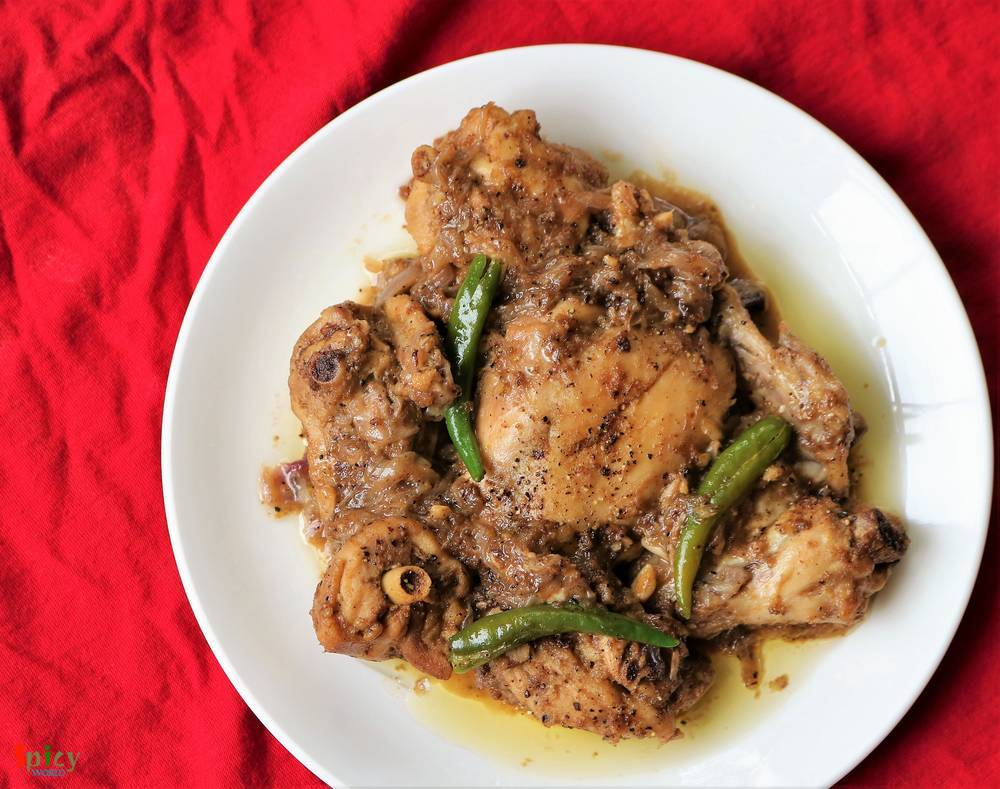
Nonveg Recipe
Apr 24, 2018
"Lajawab" is the only compliment about mom's recipe. My mom make this dish in a very easy and simple way. But it tastes delicious. You will need very few ingredients for this dish. This the best recipe for teenagers because its very easy to make.

Nonveg Recipe
Jan 18, 2020
This dish dont need any explanation. Its very popular in India and nowadays all over the world. There was a rumor that without "tandoor/oven" you cannot make tandoori. But believe me today I am sharing "oven method and stove top method" of making tandoori chicken. 'Tandoor' means oven made with clay and the heat comes from charcoal. In restaurants the actual tandoor flavour comes when juices of ch ...

Nonveg Recipe
Apr 17, 2018
Fried rice is everybody's favourite .. agree or not ? You can add whatever ingredient you have in your fridge and thats what happened with me. I had few veggies laying around, so thought why not throw everything with some rice. Best part of this idea - added some chicken strips. After around 10 minutes of stir frying a good wholesome Chicken fried rice was waiting for me to make my soul and tummy ...

Nonveg Recipe
Sep 20, 2016
I know it's been two weeks I didn't post anything due to settling down in India, but heyy now I am back with another interesting recipe from 'dhaba' gharana. Every place has their own style of dhaba / road side food joints. Whenever we plan any short trip within Bengal, we try to make the lunch stop at some popular Dhaba. Their 'torka-ruti' and 'chicken curry' with rice are must for us. I like the ...

Veg Recipe
Aug 31, 2016
Durga puja is just a few days away. Every street of Bengal and other parts of India will be filled with people and food stalls. Among all of them 'chaat' stalls are my favourite. I like various type of chaats like panipuri, dahi puri chat, papri chat, samosa chat, nimki chat, batata puri chat, ghugni chat and so on. Though today I am not sharing any Bengali chaat, but 'pav bhaji' is quite famous i ...

Nonveg Recipe
Aug 12, 2016
He bought a large packet of Tilapia fillets last week. He is a crazy fan of fish and can eat it everyday, whereas, I don't like to eat 'macher jhol' / 'mach vaja' each and every day like him. I get bored very quickly. So, this week I made these 'tandoori fish tikkas' along with some rice and simple daal. They came out delicious and also uplifted the taste of our boring lunch. I followed a very eas ...

Nonveg Recipe
Aug 8, 2016
We both adore almost any type of mutton curry. I think, once in a week, mutton curry is must for every Bengali households. I made this curry with some plain roti / chapati in dinner last month, just didn't get time to post. Now finally I am sharing this yummy recipe with you all. If you love the strong flavour of black pepper, then believe me, 'morich mangsho' is worth giving a try. I am sure your ...

Nonveg Recipe
Aug 16, 2016
Yesterday I experienced the worst ... my camera's memory card got corrupted and I lost more than half pictures of this recipe. We tried very hard to recover those photos but no luck!! It was nobody's fault, it's just that the tiny little piece of 'card' betrayed me ??? very harshly .. and I felt tremendously helpless towards 'technology'. Now you guys know why there is no step by step pictures ...

Veg Recipe
Aug 11, 2016
Chanar Dalna is a very hearty vegetarian preparation with simple ingredients. My mom used to serve this curry with 'Luchi' and the pair was heavenly. 'Chana' means curdled milk or homemade paneer and 'Dalna' means curry. Both of them are Bengali words. You can definitely make this dalna on any puja / vrat days as they are onion and garlic free. I have already shared 'chanar kalia' recipe with you ...

Nonveg Recipe
Aug 4, 2016
Chicken Pakoras require no introduction. Specially when they are coated with a sweet and spicy sauce ... I love to eat them more than I love to eat any Chinese takeouts. It's a very kid friendly recipe and you can always control the heat level according to your little ones tastebuds. These tangy, spicy bites are more than yumm ! If you are having guest and you want to serve them a new starter then ...

Veg Recipe
Jul 21, 2016
How many of you guys clean your kitchen pantry often ? Well, I do it once / twice in a year .... very common for a super lazy person ! Last week I found half bag of whole moong daal in my pantry which was sitting behind a pack of pasta without whispering a word. Then I thought why not make a very simple daal like comfort food. Didn't get time to soak the lentils in water, that's why I used pressur ...
 / চিকেন কাটলেট")
Nonveg Recipe
Apr 20, 2016
'Chop - Cutlet' shops are very much available in Kolkata. You will surely find one or two shop in every street. You know how much I love fried stuff, but this one sits on top of my favourite list. 'Cutlet' means breadcrumb coated fried flat croquette. Generally in India we eat this type of fast food from street shop. After my marriage my mom twice made these chicken cutlets at home. They were scru ...

Nonveg Recipe
Jun 13, 2016
Earlier I have shared the recipe of 'Kolhapuri Egg curry', today I am going to share the same recipe, but with chicken and some changes. One of the main ingredient in Maharashtrian cuisine is 'coconut'. We both are not too much coconut eater but when it comes to make authentic dish, I always try to make the taste as close as possible. As this is a 'Kolhapuri' gravy, you have to incorporate coconut ...
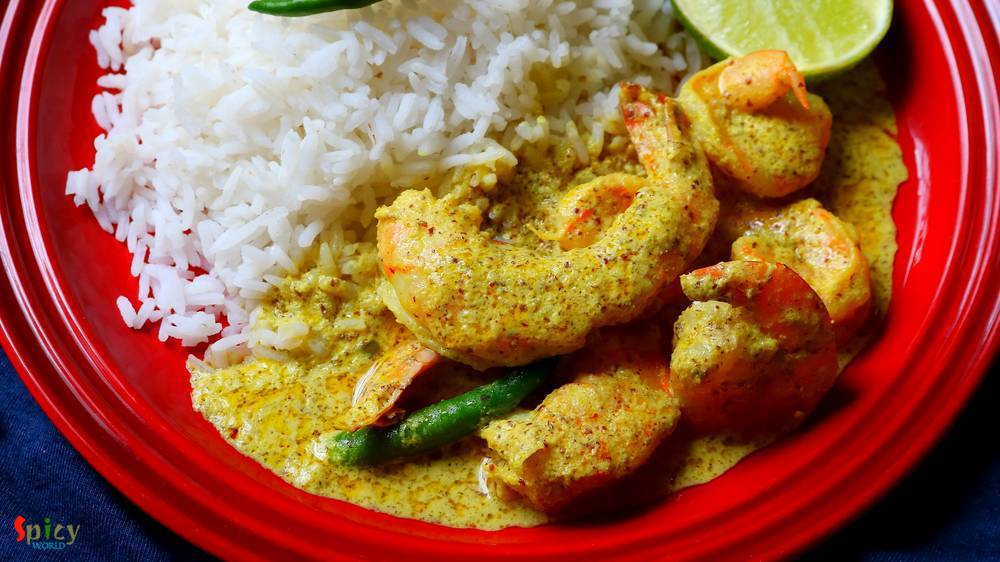
Nonveg Recipe
Jul 18, 2016
There are so many fish curry recipes in Bengali cuisine which calls for 'mustard' / sorshe, but this particular item is a jewel because you can cook this in microwave within 5 minutes.Yeaah you read it right ! With some steamed rice this 'sorshe chingri bhapa' tastes best. If you are a shrimp lover and also don't know about this dish, then trust me and give it a try ... you can thank me later !

Nonveg Recipe
Jul 12, 2016
In USA, every Indian resturant serves 'chicken tikka masala' and it tastes delicious. I never had it in India, don't know why ? Tikka sized grilled chicken, onion and bell peppers are cooked in a tomato based creamy gravy. After tasting this dish several times in restaurants, last month I thought of making it at home. Few months ago I uploaded the recipe of 'chicken tikka kabab', so I am going to ...
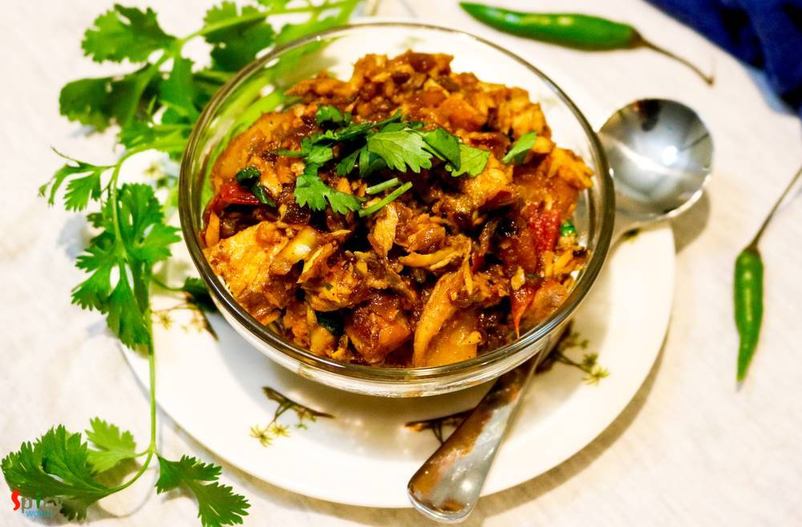
Nonveg Recipe
Jul 8, 2016
This particular recipe calls for 'bombay duck fish' / loitta maach, but we couldn't get fresh bombay duck here, that's why I used rohu. 'Macher Jhuri' is nothing but a dry preparation of crumbled / mashed fish, which is typically bengali and goes best with steamed rice. Don't forget to add cubed potatoes because without them this curry will be totally incomplete. Try this easy recipe in your kitch ...

Veg Recipe
Jul 6, 2016
I find this particular recipe of pulao very relaxing and different. 'Achaar' / pickle itself is a very tasty ingredient. With rice and some veggies it creates a very beautiful dish which takes so little time to cook. If you are looking for easy but unique weeknight dinner, then 'Achaari Pulao' along with some raita and salads should be the one for you. This is a very flexible preparation, you can ...

Veg Recipe
Jun 24, 2016
Panchmel Daal is a very healthy and traditional Rajasthani dish, which you can make with five types of lentil - yellow moong, urad, masoor, toor, whole moong / chana daal. This daal is also known as 'panchkuti daal'. This dish is fully packed with protien and nutrition, also it requires very less oil. You can enjoy this delicious, thick consistancy daal with plain roti, bati or rice. Not only the ...

Nonveg Recipe
Jun 22, 2016
'Keema Aloo' is my favourite curry when it comes to a fuss free but yummy dinner. It's so rich and spicy that there is no other meat curry which you can make in such a less time. I used mutton keema but feel free to use chicken mince. After adding the cubed potatoes, this dish becomes a killer ! Serve this with plain rice or paratha, every time 'keema aloo' will be a hit. It is also a very good ma ...
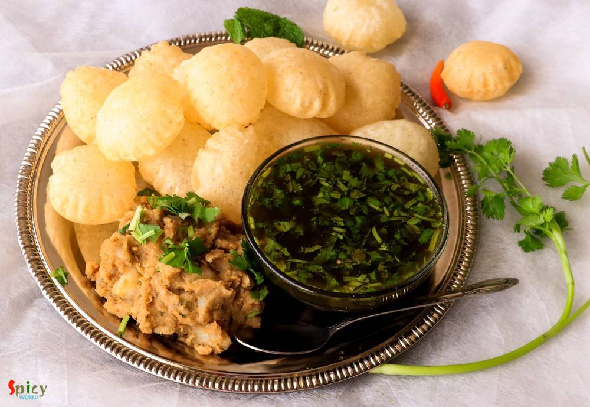
Veg Recipe
Jun 17, 2016
Most probably I am the only blogger who have taken so long to post about her own regional recipe of 'phuchka'. Because almost every blogger has their own regional recipe of 'panipuri / golgappa'. But it's better late than never. In Kolkata I never eat 'phuchka' with sweet chutney, always with tangy tamarind water ? and believe me there is no fun of having them sweet, the taste has to be spicy and ...
")
Nonveg Recipe
Jun 14, 2016
Who doesn't crave for yummy snacks in the evening with some cold drinks during summer ?? I guess everybody does. Summer or winter doesn't matter ... weekend evenings are meant for some awesome starters ! After few trials I finally created the exact taste of Kolkata's one of the famous street food - 'kobiraji cutlet'. Kobiraji means coverage or lace like texture, which you can create with beaten eg ...

Veg Recipe
Jun 8, 2016
This dish is an indo-chinese item which is very popular and frequently ordered in restaurants of India. Gobi means cauliflower. The recipe is very similar to chicken manchurian (which I have already posted), except the key ingredient here is cauliflower, not chicken. You can make this dish with potatoes, soya granules or raw jackfruit also. Every single time it tastes delicious and goes best with ...

Nonveg Recipe
May 20, 2016
Every place in this world has their own tea stalls and also some unique dishes. You can never match the taste of tea stall's food with big restaurant's food ... a huge difference ! One of the famous item of those stalls in India is 'toast'. You can get so many types of toast from them like 'butter toast', 'french toast', 'plain toast' etc. I love to eat 'dim pauruti' or in fancy words 'savory fren ...

Veg Recipe
May 19, 2016
If your milk gets curdled, don't throw away, you can do a lot with it. Well, it's bengali style 'chanar kalia' where plain curdled milk / cheese balls are first deep fried and then cooked in a tomato based gravy. It's a vegetarian delicacy of Bengali cuisine. The dish tastes awesome and goes best with plain basmati rice. In any puja or special occasion, we make this dish and it always becomes the ...

Veg Recipe
May 11, 2016
'Pulao' plays a very significant role in Indian cuisine. Our cooking is mostly based upon 'curry' / gravy version which goes best with pulao. Their relationship is like - 'behind every tasty curry, there is a pulao' ... ???? You can never underestimate it because sometimes 'pulao' itself can be very rich and attractive like 'yakhni pulao', 'prawn pulao', 'sweet pulao' and so on. Today I am sharing ...

Nonveg Recipe
May 3, 2016
Few months back I saw a recipe of this 'dhaniya murgh kabab' with boneless chicken in facebook. The picture caught my eyes and then I made my mind to give it a try. But I actually got time to make it last weekend as I already had so many recipes in my drafts and to-do list. There were few changes I make with the recipe and we both got very much impressed by it's result. Smokey flavour of any type ...
 Curry")
Nonveg Recipe
May 2, 2016
There are some recipes which are classics. They don't need any upgradation. 'Kolhapuri Egg Curry' is from this category. This is a famous Maharashtrian dish in which boiled eggs are cooked into the 'kolhapuri' gravy ... it tastes million bucks ! This curry is rich + hot in taste and goes perfectly with steamed rice or plain chapatis. You can keep a large batch of this Kolhapuri masala in fridge fo ...

Nonveg Recipe
Apr 22, 2016
Are you a garlic loving person ? I am. As chicken is my favourite protien, so I had to combine these two in one dish. 'Lehsuni Murgh' is the perfect dinner choice I made last of last weekend. The dish has very minimum spices with beautiful roasted garlic flavour. This curry can be served with naan, roti or paratha. Recipe is very simple but it tastes heavenly.

Veg Recipe
Apr 13, 2016
This is a very typical Bengali veg dish which you can only enjoy with steamed rice. We, bongs, have a very strong connection with 'posto' / poppy seeds and 'shorshe' or mustard seeds. We can creat so many delicious items with these two simple things. Now, 'he' is not a fan of eggplant, except fried version, to feed him this particular vegetable is really painful. I always have to make special dish ...

Nonveg Recipe
Apr 11, 2016
Chicken curry is almost regular in my kitchen and that's why I always try to do some twists with the masala, otherwise who will eat same chicken curry regularly? Nobody ! This time I made the twist with dry spices. Generally whole garam masala is used in this type of curry but I decided to go for a change and surprisingly I got the perfect taste. 'Bhuna' means koshano / in low flame you have to co ...

Nonveg Recipe
Mar 28, 2016
Obviously they are not our regular 'aloor chop' / aloo tikki, they are something very special, aloo tikkis are stuffed with spicy minced meat, a little different from usual, but they tastes million bucks !! We Bengalis generally eat 'aloor chop' with puffed rice or tea whereas in other parts of India 'aloo tikki' is always served with chutneys. I will recommend you the second one for these stuffed ...

Nonveg Recipe
Mar 15, 2016
This prawn curry is a family recipe and my mom-in-law is an expert of making it. It's a very common fish curry in Bengali households. We love to eat prawns in many forms, but his favorite is this one. I would suggest you to make this dish with small prawns, you will get much more flavours. First I fried the prawns, potato and cauliflowers, then cook them with gravy. Plain rice will go very well wi ...

Nonveg Recipe
Mar 15, 2016
Do you have some boneless chicken, onion and capsicum in your kitchen?? Then why don't you make some 'tikkas'? Chicken Tikka is a very well known starter or kabab in India. Nowadays it also become popular in the whole world. You can make delicious gravy also with these tikkas. But first you have to make chicken tikka and here is the recipe ..

Veg Recipe
Mar 17, 2016
The best and most common weeknight's meal is dal and rice. Nobody likes to eat bland dal, everybody needs some zing to their comfort food sometimes. So, 'spicy urad dal' is my new favourite dal with some kick. You can also call this lentil soup 'tarke wali dal', now everyone has their own story of 'tempering'. I have used lots of garlic, fresh curry leaves, cumin and mustard seeds. But you can add ...

Nonveg Recipe
Mar 4, 2015
Traditional Bengali lunch on sunday is this mutton curry along with plain rice, raw onion chunks and green chilies. After lunch we need a long nap (bhaat ghum). There was a say that we Bengalis can not eat food without potato. This is true. You have to add potatoes to this dish because there are many people like me and my husband who likes potatoes more than mutton pieces specially in this curry. ...

Nonveg Recipe
Feb 24, 2016
This is my first try on 'Prawn Biriyani' and I pretty much nailed it. I have made this biriyani in classic way, everything is cooked by 'dum' and also in sealed vessel. The taste and aroma was phenomenal. The flavour of fresh shrimps and long grain basmati rice gave this dish a unique taste, very much different from chicken / mutton biriyani. We both enjoyed it with chicken curry. You have to try ...

Veg Recipe
Feb 8, 2016
I am a big fan of different types of 'pulao'. One of my favorite pulao is 'Jeera Rice' because of it's saltiness and spicyness. It goes very well with many types of veg and non veg curry. The recipe is very simple and easy. You can also give 'jeera rice' in any adult's lunch box with dry curry, every combo will become great. Try this in your kitchen and let me know how it turns out.

Veg Recipe
Feb 5, 2016
Sometimes, specially in weekdays, I just want to spend very little time in kitchen but also cook some tasty foods. 'Dahi Aloo' is one of the quickest and tastiest maincourse I found out. You have to cook the crumbled and boiled potatoes in a spicy, tangy yogurt sauce. It is that simple, can you imagine ? This is also a no onion and no garlic recipe, best for puja days or 'vrat' days. You can pair ...

Nonveg Recipe
Jan 27, 2016
We both are not frequent egg eaters, but when we do, we try to make the curry yumm yumm !! One of our favourite egg curry is 'sorshe dim posto'- traditional bengali dish. 'Sorshe' means mustard seeds and 'posto' means poppy seeds. Lunch dishes always plays a big part in Bengali cuisine. There are several typically bengali dishes which you can only enjoy as lunch with steamed rice and may be after ...

Nonveg Recipe
Jan 27, 2016
I have tried some middle eastern platters in couple of restaurants at Austin. I have fallen in love with their kebabs. Once you tasted it, you will never forget that unique taste. I also love their shawarma chicken. So, I reasearched how to make those kebabs at home and the easiest one is this 'turkish kebab'. I also mentioned it as 'sish kebab' because in several places I found the same recipe bu ...
 / Kosha Mangsho (Thakurbari style)")
Nonveg Recipe
Jan 26, 2016
'Thakurbari' means Rabindranath Tagore's home, which is situated at Jorashanko, Kolkata. Tagore's family is popular for many things and one of them is 'cooking'. Nowadays, you can watch plenty of cooking programmes in TV, but when I was in school, only few magazines used to publish cooking recipes on weekends only. The craze was also different in that time. I still can remember how my mom and gran ...
 / Potato and Cauliflower curry / Aloo Fulkopir torkari")
Veg Recipe
Jan 25, 2016
We, nonvegetarian people, generally ordered nonveg dishes while eating at restaurants or dhabas. But we also love to eat home cooked vegetarian meals. In one of our trip to Digha before marriage, we made a stop at the famous 'Sher-e-punjab' for heavy breakfast. We ate there several times before but never did breakfast, so, that was our first time. As it was morning, we orderd veg like 'aloo parath ...

Nonveg Recipe
Jan 21, 2016
Almost every one has a slight weakness over chinese food. Taste and flavour of their food is totally unique. In Kolkata, many street food joints sell chinese food like various types of chowmin, chilli chicken, manchurian, lollipops etc. They all tastes really good. Today I am sharing the delicious recipe of 'mix Hakka noodles'. The dish has lots of vegetables, chicken and also egg, that's why the ...

Nonveg Recipe
Jan 20, 2016
Few days before I saw a fantastic picture of mutton curry in facebook. The caption was 'adabata aar kacha lonka diye mutton'. After seeing that picture, I decided to make it on dinner with some steamed rice. As the picture didn't provide the detailed recipe, except ginger and green chilies, I followed my own instinct while making the curry. After finishing, I got a thin, flavorful, tasty gravy and ...

Nonveg Recipe
Jan 19, 2016
As I am Bengali, my favourite fish curry is this one. My husband is also a huge fan of fish and specially this curry. It goes best with hot plain rice. This is a very easy process and the recipe is pretty simple. Try this in your kitchen and let me know how it tastes.

Veg Recipe
Jan 12, 2016
Whenever food has smoked or grilled flavour, there is no second thought about it. Because it has to be tasty. There are so many colorful vegetables available in grocery market during winter. I told you before that my love for winter is only because of food. We can make and also consume without any tension various types of food. Today I am talking about 'eggplant'. Though we both are not big fan of ...
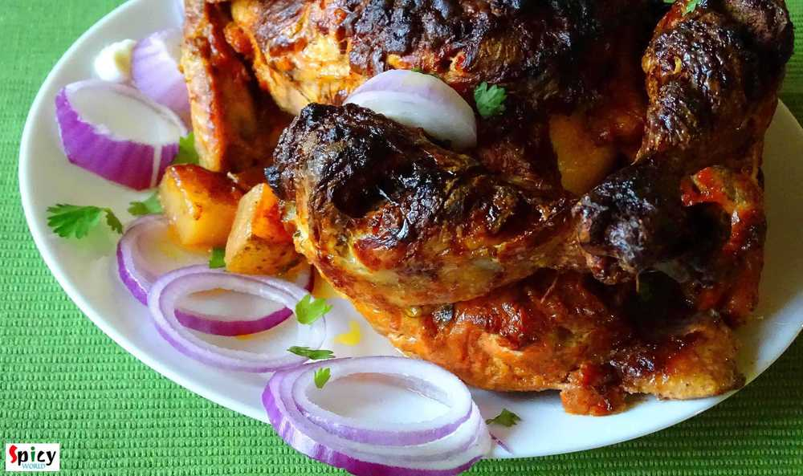
Nonveg Recipe
Jan 9, 2016
Last saturday 'he' brought a whole chicken from market. I got really panicked because I have never cooked whole chicken before. Immediately I googled for some ideas. First thought was 'murg mussallam' but then my eyes got stuck to a picture of whole roasted chicken and we both love chicken roast. So, the final decision was 'whole tandoori chicken'. The name itself describes it's scrumptiousness. E ...

Veg Recipe
Jan 7, 2016
I have many stories about 'aloor porota' in my life. My mom used to give me pure bengali style 'aloor porota' in my lunch box during school life and my friends were always a fan of my lunch box. That was my first story of this porota. When I was in college, we (my family) loved to eat 'dhaba food' during travel. In India, each and every dhaba serve 'aloo ka paratha'. I tasted their paratha many ti ...

Nonveg Recipe
Jan 6, 2016
One of my favorite weekday's meal is 'chicken pulao', because it takes very less time to cook. The dish is super tasty but very easy. I basically don't need any sides with this pulao, it itself tastes delicious. I only love to add potatoes but if you like other veggies in your pulao, feel free to add. This is also a very good lunch box option for adults and I can guarantee you that the box will re ...

Veg Recipe
Jan 5, 2016
Do I really need to say anything about this ?? It's 'chaat' !! You can get several types of chaat in India from street vendors. They all are very very tasty. One of the famous chaat in Kolkata is 'doi phuchka'. They fill the phuchkas with spicy potato filling, thick curd mixture, tamarind chutney and sprinkle some chopped onion and coriander leaves .. ssluurrpp ... !!! Now I am staying in USA, so ...

Nonveg Recipe
Jan 5, 2016
In India I never had crab, because they always scares me. After coming to USA, oneday we went for dinner in a restaurant. 'He' already ordered 'crab cake' as appetizer when I went to restroom. I really got upset after returning because I had no idea that crab cake is made of crab meat only. But when they served two cakes in a plate, the platter really impressed me. The taste was phenomenal and mos ...
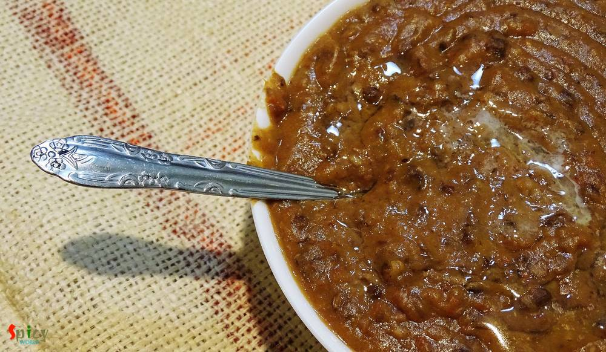
Veg Recipe
Dec 30, 2015
I heard a lot about this dish in past few months and started to research. As I never tasted it before, so I went to an Indian restaurant in Austin named 'Bombay Bistro' and tasted their 'daal bukhara'. Oh my god, it was lip smacking good and then I realized why this dal is so famous. Texture of the dal really impressed me a lot. The authentic recipe is very simple and easy but main trick here is t ...

Veg Recipe
Dec 29, 2015
Everybody loves paneer, right? Specially when there is a spicy paneer stuffing inside a paratha, I am always up for it. This was my first try on 'paneer paratha' and I just nailed it. Believe me it is much easier than 'aloo paratha'. I made those in breakfast with 'chana masala' and the combo was really gorgeous. Parathas came out perfectly crispy and soft. The taste was unforgettable, we enjoyed ...

Nonveg Recipe
Dec 23, 2015
'Dakbanglow' means roadside resting house. Travelers used to take rest or halt for a night in those houses. The care taker of those 'bunglow's cooked this curry for their guests. Nowadays these kind of recipes are almost lost but in a few restaurants in Kolkata you can still find this dish. This is a typical bengali recipe and the tastiest dish ever. Once I ate this curry in my aunt's house and I ...

Nonveg Recipe
Dec 18, 2015
First let me thank Disha D'souza for this unique idea. 2-3 weeks ago in a facebook group I saw her unique post and really got inspired. Though I changed the name and recipe little bit (hope she won't mind), but the idea credit must go to Disha. Lots of love and thanks from 'spicy world' to her. Now lets talk about the dish. You can see this is a double colored chicken curry. I also maintain two di ...

Nonveg Recipe
Dec 17, 2015
Last week, from Monday to Friday, I was very lazy and didn't do much innovative cooking. We really got bored of eating usual meals. So, I thought to do something simple but new in the weekend. I had some boneless chicken and homemade tortillas in my kitchen. Suddenly planned to make some wraps. But then I was wondering about the flavour of the filling. 'He' suggested to give 'tandoori' flavour and ...
 / Kolaier Daal")
Veg Recipe
Dec 15, 2015
Soul food means the food which you can enjoy from the bottom of your heart while eating. Being a bengali I always face a common question- 'fish and posto(poppy seeds) are your soul food, right?'. And my answer is always 'oh, hell yaa' ... ? Today I will talk about vegetarian food. We always make 'biulir daal' / 'urad daal' with posto. The combo is nothing but heavenly. There is a must ingredient ...
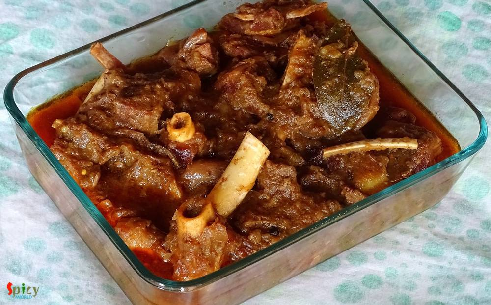
Nonveg Recipe
Dec 14, 2015
Whenever 'he' returns from market and gives me a bag of mutton, it always brings an extra big smile on my face and a great joy in my heart. I guess, this happens to many of you also ?. I always try to do something new to my mutton curry, because you all know about my experimental nature!! This time I made 'khara masala mutton', the taste was heavenly. After finishing the meal, there were nothing ...

Nonveg Recipe
Dec 13, 2015
In India, 'mutton dopyaza' is a very frequently ordered dish in restaurants. 'Dopyaza' means double amount of onion. From this curry you will get juicy meat, thick gravy and some nice crunch of onions. You can make this curry with chicken and fish also. If you make this dish in any potluck or party, it will become the main attraction. I tried to keep the recipe very simple and easy. Just give it a ...
")
Nonveg Recipe
Dec 11, 2015
I guess many people are not familiar with this name, believe me, I was also not. 'He' is a big fan of kababs, that's why I always try to find new recipes for kababs. This year, on his birthday, I made these 'jali' kababs. The concept and taste were totally new to us. But luckily 'net kabab' brought a big smile on his face and that was my real satisfaction. 'Jali' means net and they have net like t ...
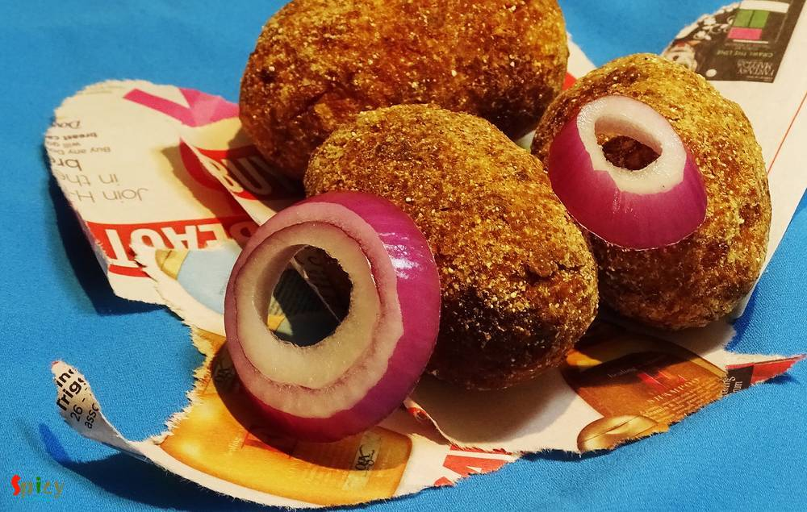
Nonveg Recipe
Dec 2, 2015
This snack is a very popular street food in West Bengal. You will enjoy these croquettes more from small street food shop / gumti / jhupri , though I don't have any experience of eating 'chingrir chop' from any restaurant. In US, there is no 'gumti', thats why I had to make those in my kitchen and brought the exact taste from Bengal. They were really delicious and we enjoyed them with chilli sauce ...

Veg Recipe
Nov 28, 2015
I think almost every Bengali is familiar with this name. I love 'posto' or poppy seeds in any form. I made this dish on yesterday lunch along with some steamed rice. The fresh flavour of mustard oil and poppy seed paste always makes me crazy. I made it in microwave but you can also make this in oven. Try this in your kitchen and let me know how it turns out.

Nonveg Recipe
Nov 26, 2015
Here in Texas, one of the famous burger is 'pulled pork burger'. Everyone is a big fan of this burger. Last weekend I had some buns in my kitchen and some boneless chicken in my fridge. Then I thought to replace pork with chicken and some delicious 'pulled chicken burger's along with coke came out from my kitchen. I really love to make different types of burger but this one is my first posting on ...

Nonveg Recipe
Nov 26, 2015
Its true that I love eating pasta after coming usa. In India I was more fond of noodles, ramen or maggie. But recently I experimented couple of recipes on pasta and they turned out really well. I love my pasta on spicy side, that's why I mentioned it in the title. After baking with cheese, the taste of this dish became phenomenal. If you do not want to bake or use cheese, then make this dish witho ...
")
Veg Recipe
Nov 25, 2015
I have a friend in New Jersy, Monica, who makes the best chana masala ever. I learned this recipe from her. Since we moved from Jersy I missed her and her cooking very much. This is a punjabi dish, goes very well with bhatura, puri or roti. The recipe is very simple and it tastes delicious.

Nonveg Recipe
Nov 21, 2015
When an inch of oil or ghee floats upon gravy, yes its 'mughlai nawabi dish'. 'Nawab' means king. This category of curries have nice colored, rich, thick, creamy gravy. 'Chicken Korma' is my favourite one. You can easily eat this curry once in a month along with 'biriyani', 'pulaao', 'butter naan' or 'rumali roti'. Do not put this kind of food in your regular diet because you have to make or eat k ...
")
Nonveg Recipe
Nov 20, 2015
You know winter is coming and all you need is a bowl of warm soup. You can put many vegetables and protiens in it. Soup is very healthy meal for kids. It is also very helpful for sick people. Specially in winter, you can get many varieties of vegetables from grocery store. Then why not make some soup? This one is a very simple and easy recipe. I mentioned 'desi' style because i used some whole spi ...

Nonveg Recipe
Nov 19, 2015
When I was in college, I loved to do some cooking with my mom. 'Dhaniya Chicken' was one of my teenage speciality dish. Dhaniya / dhonepata means coriander leaves. I only prefer to use garlic and don't like to use whole spices for this dish. According to me, the strong aroma of whole spices dominate the flavour of fresh coriander leaves. After a long time, last night I made 'dhonepata chicken' alo ...

Nonveg Recipe
Nov 18, 2015
It is almost impossible to find them who doesn't love chinese food, specially 'hakka noodles'. I think, this is the most frequently ordered dish in any indo-chinese restaurant. I, personally don't like any side dish with hakka noodles because this chinese dish has its own magic. I made this noodles in dinner and the taste turned out exceptionally good, the flavour was same like restaurants. Try th ...
")
Veg Recipe
Nov 17, 2015
Bengali without posto(poppy seed)? - impossible. Bengali without aloo(potato)? - no way. I specially can't live without these two. 'Aloo posto' or 'aloo fulkopi posto' is my favourite weekday's lunch with steamed rice and hot daal. My hubby is very fond of 'fulkopi' (cauliflower), that's why I added this in the gravy. But if you don't like you can totally skip this part. The most simple and easy r ...
")
Veg Recipe
Nov 15, 2015
'Khatta' means tangy/sour and 'baingan' means eggplant/begun. Most probably this dish is from Kashmiri cuisin. I do not have much knowledge about this cuisin but I can assure you that you will never forget this eggplant recipe. Last wednesday we both wanted to eat veg in dinner and I had an eggplant(begun) in my fridge. So, I googled for some spicy veg recipes made with eggplant, and my eyes got s ...
")
Nonveg Recipe
Nov 13, 2015
I always try new recipes on chicken because it is my family's favourite. Last Friday 'he' wanted to eat any dry preparation at dinner and told me 1 and half hour ago from dinner time. As I had not much time in hand, so, I thought how about marinate everything with chicken pieces and cook it. It took very less time and the taste turned out phenomenal. Believe me the end result was beyond my imagina ...

Veg Recipe
Nov 11, 2015
This is a no onion and no garlic recipe. Usually in many 'puja's we make this kind of dishes. 'Potato curry' goes very well with 'luchi', 'paratha', 'kochuri' etc. But last tuesday I tried a new combo with 'bhatura'. Magically we both loved and enjoyed it very much. I learned this potato curry from my mom. She also follow the same recipe for 'niramish aloo dom' and it tastes always good. Try this ...

Veg Recipe
Nov 7, 2015
From my childhood, almost in every bengali wedding I have seen the famous combo of 'koraishutir kochuri' and 'kashmiri aloor dom' in the menu card. There is no question about that combo, it tastes heavenly. This dish is no onion and no garlic recipe but the attraction is its nice red color. You will need different types of spice powder for this recipe. I don't know much about kashmiri cuisin, this ...

Veg Recipe
Nov 5, 2015
Bengalis are always very fond of 'peas kochuri' and 'aloor dom' (Dum Aloo) during winter. In Texas, the temparature starts falling as we approach towards the winter time. I already took out light blankets, full sleeves and light sweters. Last weekend 'he' begged me for 'kochuri-alurdom' and here is the result ... ? I have already posted one recipe of 'aloor dom' which we can make for party or any ...

Nonveg Recipe
Nov 2, 2015
Who doesn't love sandwich ? When there is chicken, I am always up for it ?. I make this kind of sandwich in my home oftenly. The taste is kind of Indian spicy but believe me you will love it. One can make many kinds of sandwiches, and this one is my kind. If you have everything in your hand then the process is very simple and easy. You will need 'green chutney' for the sandwich. Make this in your ...

Nonveg Recipe
Oct 28, 2015
Last weekend I made a jar of coriander-mint chutney and kept in for fridge for future purposes. Yesterday 'he' wanted some snacks in the evening and also wanted something new. Usually we serve kababs along with green chutney but I used that green chutney for the marination of the chicken. Believe me it was worth trying and that's the reason I named it 'chutney kabab'.The texture and taste came out ...

Nonveg Recipe
Oct 23, 2015
It's always very hard for me to make as usual meal like 'daal, sabji' on weekend. I am sure you will get delicious aroma of spicy dishes from my kitchen almost every weekend. Last weekend 'charcoal' flavour was coming out from a new chicken preparation. Yes, its 'dahi dhuan chicken'. If you like to eat dhaba foods then you will become a fan of this dish. It has a thick rich gravy, nice crunch of o ...

Nonveg Recipe
Sep 23, 2015
In Bengali's weekdays lunch menu fish has to be there. There is a say 'mache-bhate-bangali' indicates our common meal is fish curry and rice. This is a special dish for party, occasions or gatherings. Macher kaliya goes very well with sweet pulao, fried rice or even plain rice.
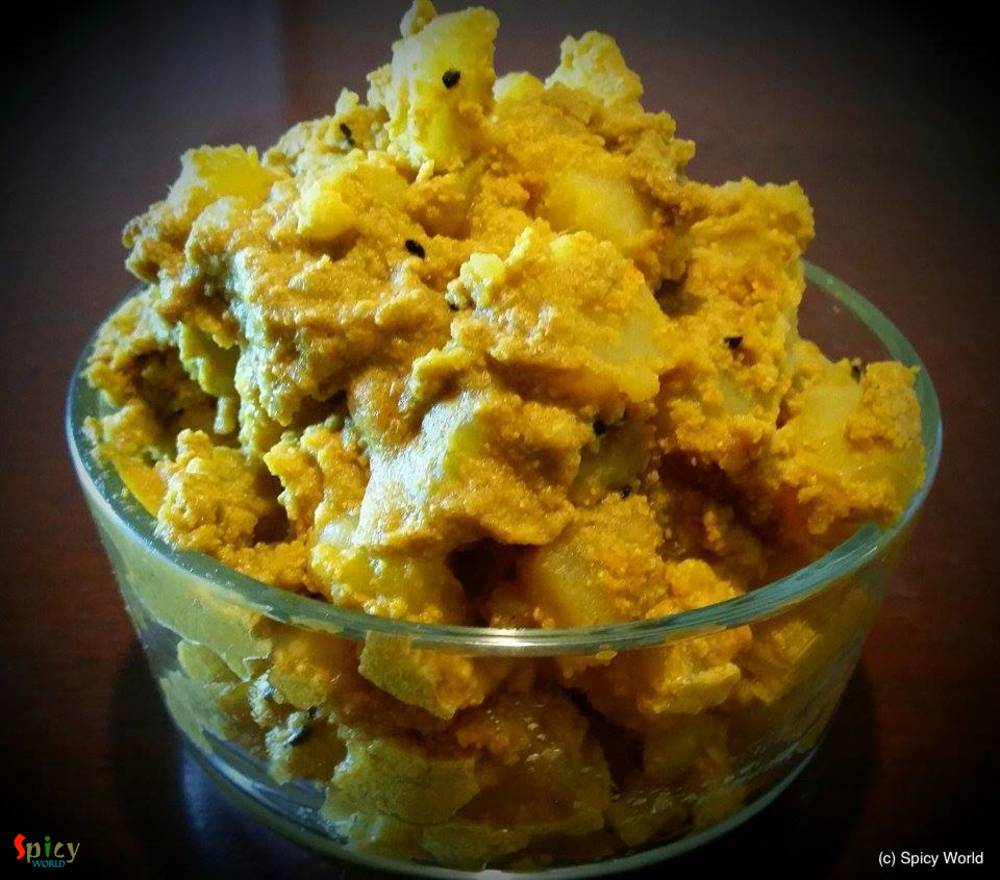
Veg Recipe
Sep 21, 2015
Whenever you are going to describe anything about Bengali, you have to mention 'posto'/poppy seeds. They make planty of dishes with posto like 'piyaj posto', 'potol posto', 'posto bora' etc and they all are my favourite dishes. 'Aloo Posto' is one of the popular item among the posto category. You will love to eat this with hot plain rice and daal.

Nonveg Recipe
Sep 16, 2015
In India we make chinese food with some own variations, that's why we call it 'indo-chinese'. Egg chicken chowmin is very famous street food from kolkata. You can also get veg chowmin, prawn chowmin, only chicken chowmin etc. But my favourite is this one. Try this at your home, you will get the exact taste of street food.
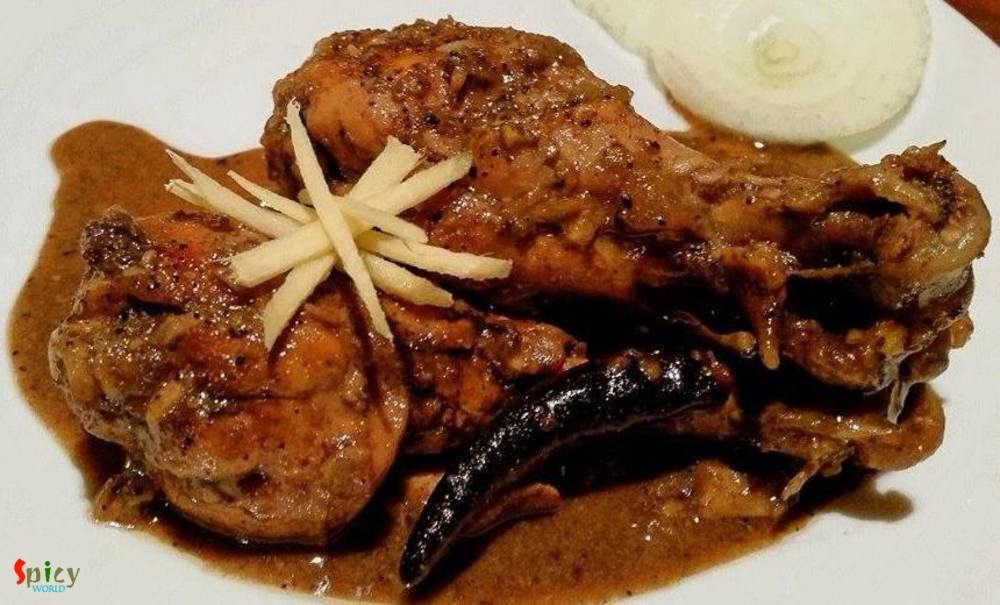
Nonveg Recipe
Sep 13, 2015
I got this recipe from one famous cooking channel in youtube. So, let me thank them first. Now the main attraction of this chicken curry is its aroma and simpleness. When I was making it, the aroma from the spices made my husband and me very much impatient. But anyway we had to wait till dinner and enjoyed with hot roti a lot. Make this dish and I am sure it will become your favourite too.

Nonveg Recipe
Sep 11, 2015
Whenever you are unable to think of any maincourse dish for your party, you can blindly rely on this chicken curry. Everyone will like it. This curry has nice aroma of 'kadai masala', little crunch of onion, capsicum and the juicy chicken pieces. Serve this curry with pulao or biriyani, then your party menu will be memorable.